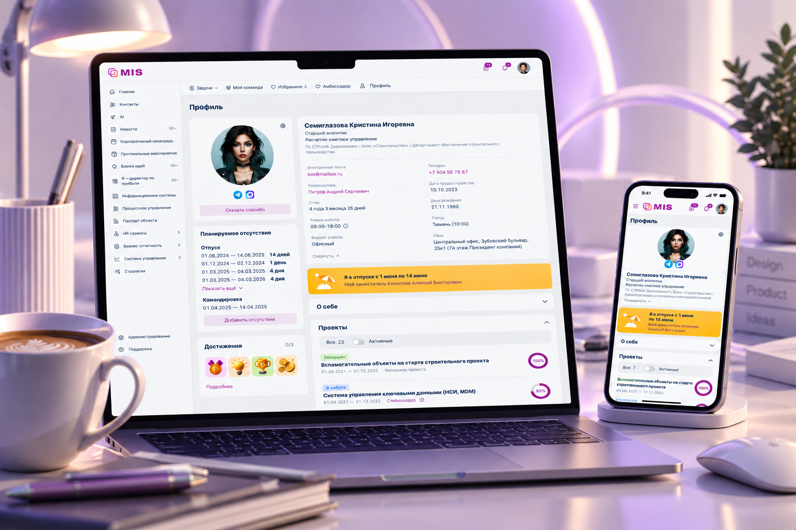
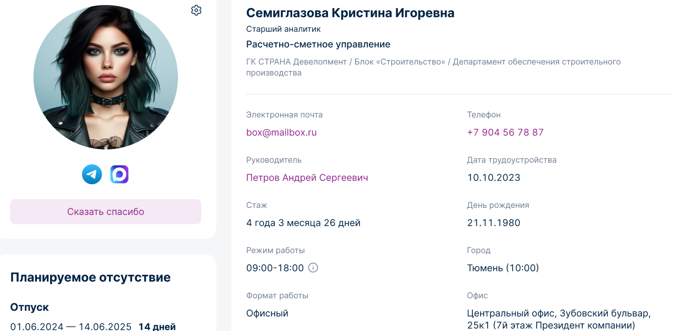
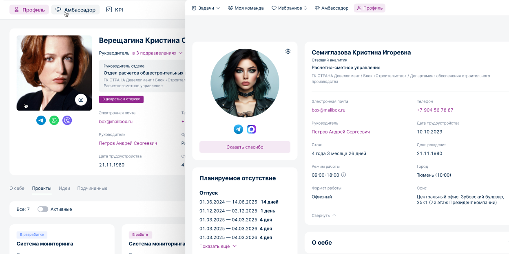
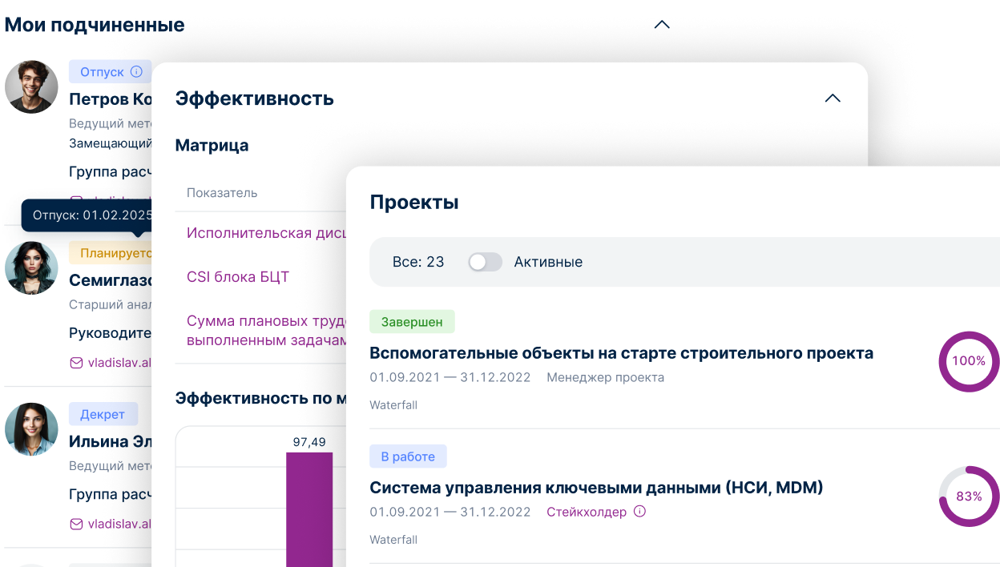
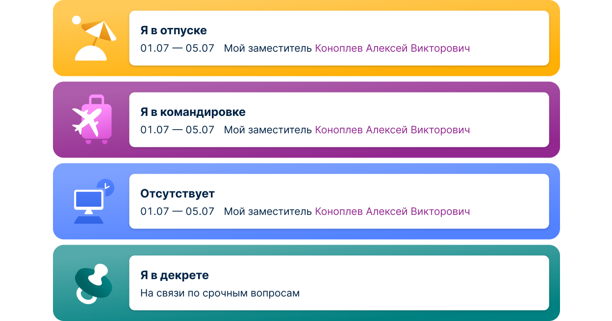
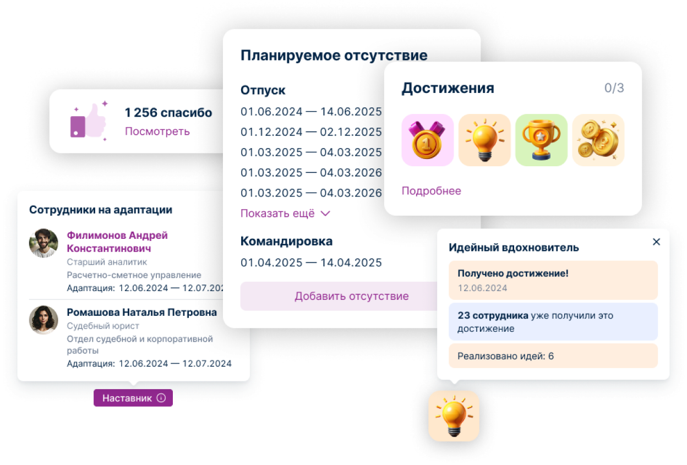
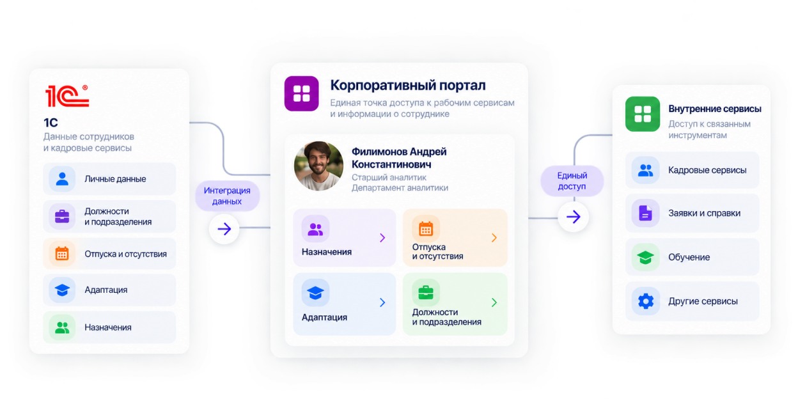

04
Личный кабинет
сотрудника
Многофункциональный кабинет сотрудника внутри корпоративного портала

01
Контекст
Профиль создавался как часть многофункционального кабинета сотрудника внутри корпоративного портала. Его задача — собрать в одном месте информацию о сотруднике и связанные с ним рабочие сценарии, часть которых раньше была доступна в 1С. Требования к профилю формировались на основе user stories, собранных HR-аналитиками у руководителей разных уровней и рядовых сотрудников.

02
От требований к структуре
На основе собранных требований сформировал информационную структуру профиля и начал прорабатывать ключевые сценарии. В процессе проектирования от руководителей поступили новые вводные, которые существенно изменили приоритеты. Вместо адаптации первоначального решения пересобрал концепцию профиля с учётом новых данных.
Новые требования изменили структуру и приоритеты информации в профиле.

03
Проверка решения
Готовые макеты представили заказчикам и сотрудникам HR. Основные сценарии и структура профиля были приняты сразу, дальнейшие изменения носили преимущественно уточняющий характер.

04
Состояния профиля
Профиль проектировался не как статичная карточка сотрудника, а как рабочий интерфейс с различными состояниями. В зависимости от ситуации пользователь получает дополнительную информацию и соответствующие действия.

05
Рабочие сценарии
В профиль добавили реальные сценарии сотрудников: назначения в подразделения, отсутствие, адаптацию, достижения и обратную связь. Интерфейс показывает важную информацию в контексте сотрудника и помогает руководителям быстрее ориентироваться в его текущем статусе.

06
Интеграции
Кабинет стал единой точкой доступа к данным сотрудника и связанным рабочим сервисам. Часть данных поступает из 1С, а профиль используется как единый интерфейс для работы с кадровыми и внутренними сервисами.
